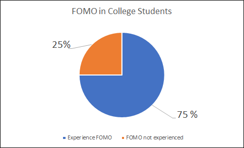

College Students are struggling with "FOMO"
By: Alex Marek
“FOMO” is a common sensation among college students balancing busy lives.
Fear of missing out or “FOMO” is a phenomenon that impacts over half of college students. FOMO describes the anxiety experienced when an individual feels as though they are missing out on social events and trends. Anyone can experience FOMO, but due to the very social
nature of college life, young adults are among the top reported to experience it. Approximately, 75% of young people experience FOMO.
The acronym “FOMO” was first used in 2004 by Patrick McGinnis in the Harvard Business School magazine. McGinnis used the term as an explanation as to why individuals overschedule themselves. The acronym became more widely used in the 2010’s due to the further development of social media platforms.
A nationally conducted survey found that 56% of social media users experience FOMO. Social media shows users a “highlight” reel of others' lives, not their reality. Excessive use of social media can cause individuals to feel as though they are not measuring up to their peers.
“My first semester of college I didn’t know anyone and was trying hard to meet people. Social media made it seem like everyone around me was so well adjusted and already had giant friend groups,” said Lindsay Fisher, sophomore public relations major.
College is a time when students are trying to find or maintain a sense of balance between social life and academics. Many students also have jobs and positions in student organizations to add to this balance. It can be difficult for many students to achieve this balance, which leaves them feeling excluded from social activities or falling behind in school.
“I know that I shouldn’t let FOMO affect me as much as it does. But when I can’t go to something because of homework or my job I feel like my friends are forgetting about me,” said sophomore Hannah Scopp. Scoop is a double major in criminal justice and psychology and has a job at Eppley Recreation Center.
FOMO also leads to an increase in potentially harmful behaviors among college students such as drug and alcohol use. Students experiencing high levels of FOMO did not drink more overall but consumed more in single drinking episodes and experienced more negative consequences from drinking, according to researchers. FOMO can also lead to increased feelings of loneliness, anxiety and depression.
There are ways that college students can manage feelings of FOMO. Some students find that building time management skills and keeping a schedule helps them tackle this fear.
“I’m learning to plan out my days and build better time management skills so I have time for friends,” Scopp added.
Limiting time on social media can help stop individuals from comparing themselves to others. Furthermore, social media can be used in a productive way. Users can reach out to others and broaden their social horizons.
Fear of missing out is a common occurrence, especially in the digital age when the world has access to everyone’s lives and daily activities. There are strategies students can implement to tackle this phenomenon and not let it control their lives.
Copyright 2023 / Journalism 352 / Alex Marek


Social media can increase feelings of FOMO
Poor Time managment can lead to unhealthy study habits